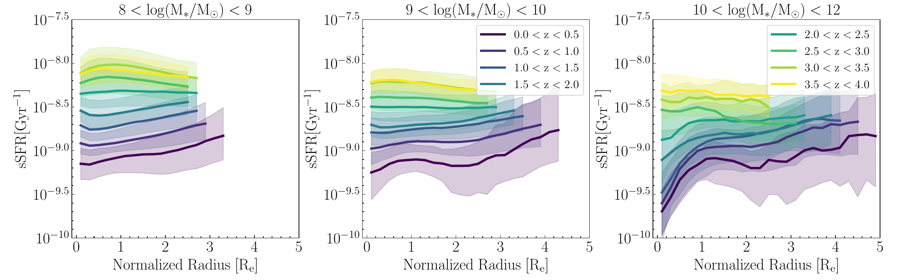
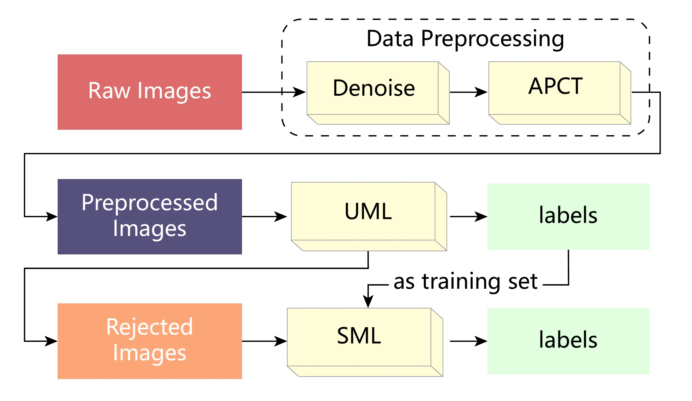
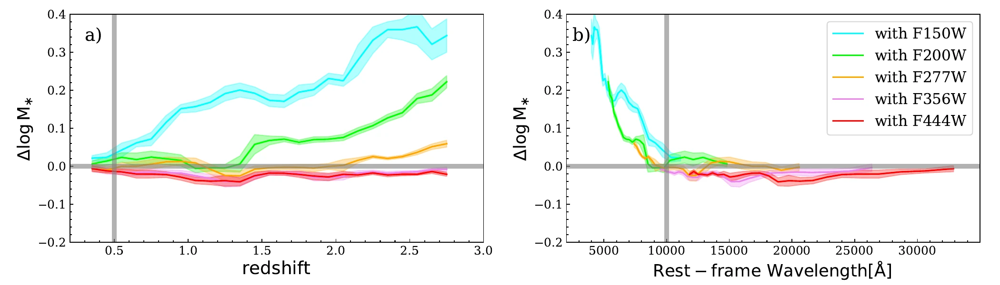
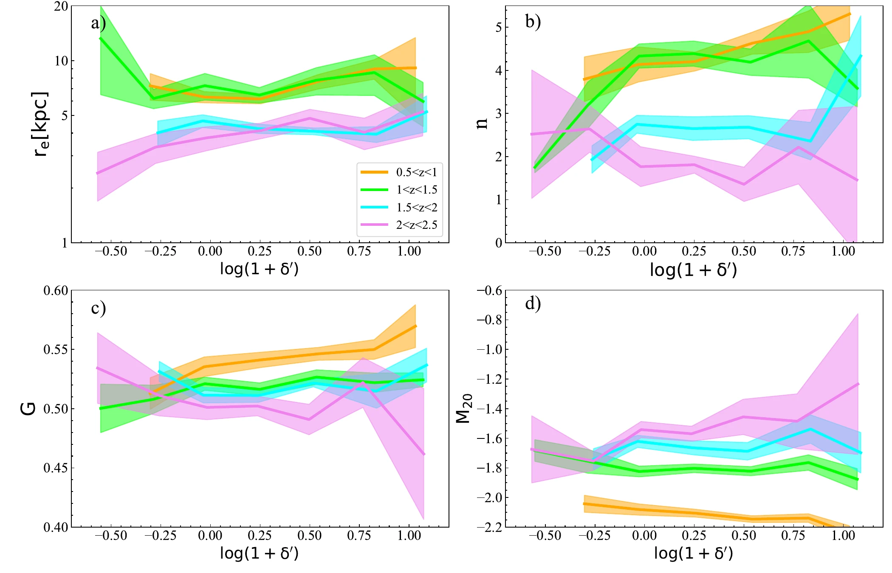

First-author works on galaxy evolution and morphology
Evidence from Radial Profiles of Specific Star Formation Rate Based on JWST/HST — A&A, accepted 2026 arXiv:2512.01684
Understanding how galaxies assemble stellar mass over cosmic time requires spatially resolved information. Prior resolved studies were limited by small samples or restricted wavelength coverage, particularly at z > 3 where HST alone cannot accurately measure stellar mass and SFR.
We combine JWST multi-wavelength imaging from the CANDELS fields (CEERS, JADES, PRIMER) with existing HST data. Using PSF-matched, resolved SED fitting in concentric elliptical annuli, we derive stellar mass surface density (Σ*) and SFR surface density (ΣSFR) for 46,313 galaxies at 0 < z < 4 with log(M*/M☉) > 8.

Application to ~100,000 Galaxies in the COSMOS Field — ApJS, 274, 42, 2024 DOI
Galaxy morphology is a fundamental diagnostic of evolution, yet traditional visual classification is prohibitively expensive for modern large-area surveys. Purely supervised methods require large prelabeled training sets that introduce subjective bias. A scalable, robust classification method is essential for upcoming surveys including CSST, Euclid, and Roman.
We refine the USmorph framework, combining unsupervised machine learning (convolutional autoencoding + Bagging-based multi-clustering) with supervised classification. Applied to galaxies with Imag < 25 at 0.2 < z < 1.2 in the COSMOS field using HST/ACS I-band images from ~590 pointings covering ~1.64 deg².

Resolved vs. Unresolved SED Fitting from the Perspective of JWST — ApJ, 958, 82, 2023 DOI
Stellar mass is a fundamental quantity in galaxy evolution, yet previous work reported significant discrepancies between stellar mass from spatially resolved (pixel-by-pixel) SED fitting and integrated photometry — commonly attributed to the outshining effect of young stellar populations. It remained unclear whether this reflects a genuine physical effect or an artifact of insufficient wavelength coverage.
We use early JWST/CEERS observations combined with HST imaging to perform spatially resolved SED fitting for 1,060 galaxies at 0.2 < z < 3.0 with log(M*) > 9, using six NIRCam broadband filters (F115W–F444W) plus two HST filters.

Properties of Massive Galaxies in the COSMOS-DASH Field — ApJ, 950, 130, 2023 DOI
Both internal processes (AGN and supernova feedback) and external environmental factors (mergers and interactions) influence galaxy evolution, yet their relative roles for the most massive galaxies remain poorly understood. Results at intermediate and high redshift are contradictory, particularly for galaxies with log(M*/M☉) > 11.
We select 1,684 massive galaxies with log(M*) > 11 at 0.5 < z < 2.5 from the COSMOS2020 catalog. The COSMOS-DASH field provides the largest contiguous HST/WFC3 near-IR imaging to date. We estimate local overdensity using a Bayesian density estimator and perform both parametric and nonparametric morphological measurements.
